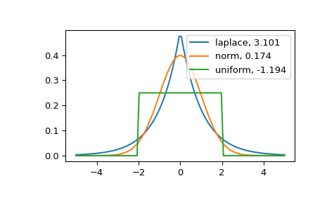

scipy.stats.kurtosis¶
-
scipy.stats.kurtosis(a, axis=0, fisher=True, bias=True, nan_policy='propagate')[source]¶ Compute the kurtosis (Fisher or Pearson) of a dataset.
Kurtosis is the fourth central moment divided by the square of the variance. If Fisher’s definition is used, then 3.0 is subtracted from the result to give 0.0 for a normal distribution.
If bias is False then the kurtosis is calculated using k statistics to eliminate bias coming from biased moment estimators
Use
kurtosistestto see if result is close enough to normal.- Parameters
- aarray
Data for which the kurtosis is calculated.
- axisint or None, optional
Axis along which the kurtosis is calculated. Default is 0. If None, compute over the whole array a.
- fisherbool, optional
If True, Fisher’s definition is used (normal ==> 0.0). If False, Pearson’s definition is used (normal ==> 3.0).
- biasbool, optional
If False, then the calculations are corrected for statistical bias.
- nan_policy{‘propagate’, ‘raise’, ‘omit’}, optional
Defines how to handle when input contains nan. ‘propagate’ returns nan, ‘raise’ throws an error, ‘omit’ performs the calculations ignoring nan values. Default is ‘propagate’.
- Returns
- kurtosisarray
The kurtosis of values along an axis. If all values are equal, return -3 for Fisher’s definition and 0 for Pearson’s definition.
References
- 1
Zwillinger, D. and Kokoska, S. (2000). CRC Standard Probability and Statistics Tables and Formulae. Chapman & Hall: New York. 2000.
Examples
In Fisher’s definiton, the kurtosis of the normal distribution is zero. In the following example, the kurtosis is close to zero, because it was calculated from the dataset, not from the continuous distribution.
>>> from scipy.stats import norm, kurtosis >>> data = norm.rvs(size=1000, random_state=3) >>> kurtosis(data) -0.06928694200380558
The distribution with a higher kurtosis has a heavier tail. The zero valued kurtosis of the normal distribution in Fisher’s definition can serve as a reference point.
>>> import matplotlib.pyplot as plt >>> import scipy.stats as stats >>> from scipy.stats import kurtosis
>>> x = np.linspace(-5, 5, 100) >>> ax = plt.subplot() >>> distnames = ['laplace', 'norm', 'uniform']
>>> for distname in distnames: ... if distname == 'uniform': ... dist = getattr(stats, distname)(loc=-2, scale=4) ... else: ... dist = getattr(stats, distname) ... data = dist.rvs(size=1000) ... kur = kurtosis(data, fisher=True) ... y = dist.pdf(x) ... ax.plot(x, y, label="{}, {}".format(distname, round(kur, 3))) ... ax.legend()
The Laplace distribution has a heavier tail than the normal distribution. The uniform distribution (which has negative kurtosis) has the thinnest tail.
